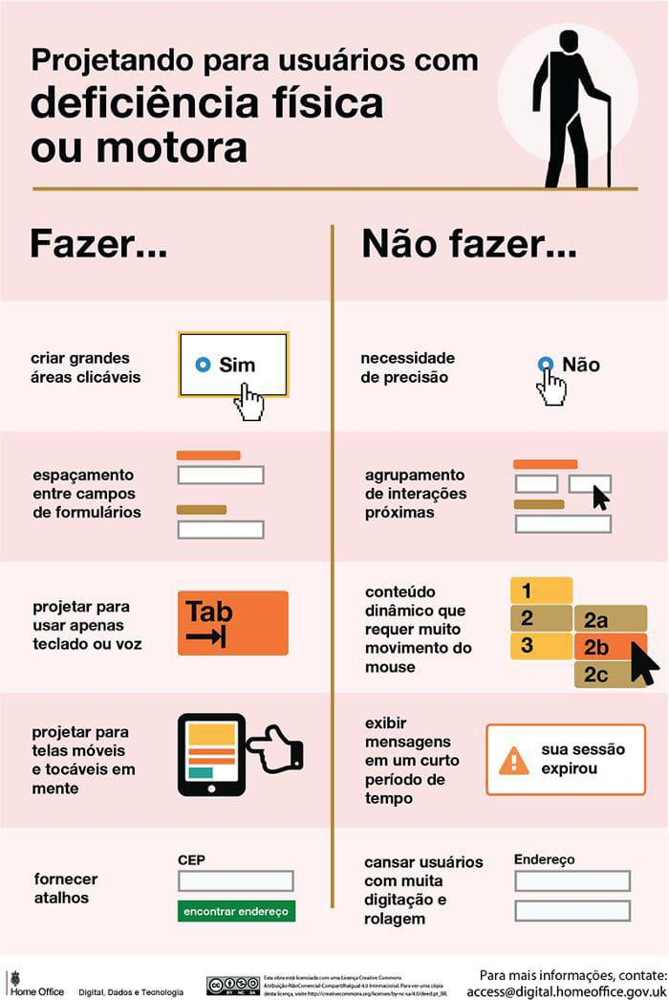

Deficiência fisica

Principais Dificuldades
- Dificuldade com a digitação
- mesmo com o crescimento de acessórios para computadores ou notebocks,são raros produtos que traz algum tipo de acessibilidade ou melhor experiência para um usuário com mobilidade reduzida. mesmo em empresas não encontramos algo que facilite a digitação ou navegar na internet de forma simples e fácil e isto prejudica a inclusão social.
entendendo a deficiencia fisica:
Deficiências físicas são alterações completas ou parciais de um ou mais segmentos do corpo humano, que acarretam o comprometimento da mobilidade e da coordenação geral, podendo também afetar a fala, em diferentes graus. As deficiências físicas mais comuns são: – Paraplegia: perda total das funções motoras; – Monoplegia: perda parcial das funções motoras de um só membro (podendo ser superior ou inferior); – Tetraplegia: perda total das funções motoras dos membros superiores e inferiores; – Hemiplegia: perda total das funções motoras de um hemisfério do corpo (direito ou esquerdo); – Ostomia: é uma intervenção cirúrgica que permite criar uma comunicação entre o órgão interno e o externo, com a finalidade de eliminar os dejetos do organismo. Os ostomizados são pessoas que utilizam um dispositivo, geralmente uma bolsa, que permite recolher o conteúdo a ser eliminado através do ostoma; – Amputação: é a remoção de uma extremidade do corpo; – Paralisia cerebral: diz respeito a uma lesão cerebral que acontece, em geral, quando falta oxigênio no cérebro do bebê durante a gestação, no parto ou até dois anos após o nascimento (traumatismos, envenenamentos ou doenças graves). Dependendo do local do cérebro onde ocorre a lesão e do número de células atingidas, a paralisia danifica o funcionamento de diferentes partes do corpo. A principal característica é um desequilíbrio na contenção muscular que causa tensão, inclui dificuldades de força e equilíbrio e comprometimento da coordenação motora. – Nanismo: é uma alteração genética que provoca um crescimento esquelético anormal, resultando num indivíduo cuja altura é muito menor que a altura média de toda a populaçãoCódigos | Repositórios | APIs
Se você conhece algum site, ferramenta ou desenvolveu algo que possa contribuir para o desenvolvimento de nosso portal, faça seu login e divulgue nesse portal. JUNTO SOMOS MAIS FORTES.
aplicativos ou programas para facilitar a navegação ou digitação
- TELEPATIX
- TelepatiX Pessoas que não conseguem falar e têm movimentos muito limitados, como pacientes de Esclerose Lateral Amiotrófica (ELA) e indivíduos acometidos de Paralisia Cerebral ou sequelas de Acidente Vascular Cerebral / Encefálico (AVC/AVE) podem usar o TelepatiX para se comunicar pelo piscar dos olhos, usando a câmera do próprio celular, tablet ou computador. O aplicativo oferece um alfabeto que é percorrido por uma varredura sequencial de linhas e colunas. O próprio utilizador consegue escolher a velocidade da varredura. A pessoa seleciona cada linha e coluna simplesmente piscando os olhos ou, alternativamente, tocando em qualquer parte da tela, mesmo tendo o menor e mais impreciso movimento. A seleção também pode ser feita por meio de acionadores externos ou, até mesmo, pelo clique do botão esquerdo de um mouse comum. Para acelerar a escrita, o TelepatiX vai tentando “adivinhar” as palavras a cada letra escolhida, e também aprende o vocabulário frequente do utilizador e completa suas frases mais usadas. Depois de escrever, a pessoa pode mandar o aplicativo vocalizar a frase em alto e bom som. O TelepatiX pode ser usado online em qualquer computador, celular ou tablet, sem precisar de download. ACESSE AGORA O TELEPATIX: Entre em https://telepatix.tix.life (use o piscar dos olhos, a barra de espaços, o clique esquerdo do mouse ou o toque em qualquer parte da tela para controlar a varredura).
- eSSENTIAL Accessibility
- O eSSENTIAL Accessibility é uma tecnologia assistiva para computadores pessoais que auxilia os usuários com dificuldades de controlar o mouse, de usar o teclado ou de ler na tela. Na prática, funciona como um navegador com recursos de acessibilidade, permitindo, por exemplo, controlar o cursor com movimentos do rosto e comandos de voz, dentre outras alternativas para mouse. O navegador pode ser baixado gratuitamente nos sites das empresas da coalizão eSSENTIAL Accessibility.